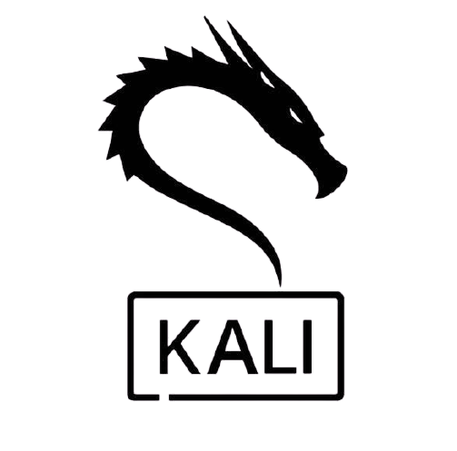

Kali Linux is a Debian-based Linux distribution aimed at advanced Penetration Testing and Security Auditing. Kali Linux contains several hundred tools which are geared towards various information security tasks, such as Penetration Testing, Security research, Computer Forensics and Reverse Engineering. Kali Linux is developed, funded and maintained by Offensive Security, a leading information security training company.
Kali Linux was released on the 13th March 2013 as a complete, top-to-bottom rebuild of BackTrack Linux, adhering completely to Debian development standards.
Key differences between Kali Linux and other linux distros (e.g. Ubuntu):
- The focus of Kali Linux is very different from each other in terms of purposes and characteristics.
- The main difference between Kali Linux and other distro is their target audience that is influenced by the nature of applications that Kali Linux vs other distros offers.
- Ubuntu doesn’t target any particular kind of audience apart from normal computer users.
- Kali Linux, on the other hand, is specially formulated for information security purposes. So, most of its work is related to security and penetration testing apps.
- As we know that other distros (e.g. Ubuntu) is designed for general computer users, its interface is more user-friendly and it has an appearance that is less techy.